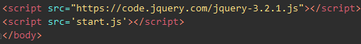

Include JQuery library into Website
Preview: JQuery interact with DOM elements, when we use Jquery library. What? Copy link src="https://code.jquery.com/jquery-3.2.1.js" and wrap it into the script tag then insert into the head tag in your website. Make sure that HTML is loaded before we run our jQuery and JavaScript code. Where? Link JavaScript file into HTML file, then use JavaScript functions and syntax in our main.js file. Don't forget: Before the closing /body tag, create a link to the main.js file using a script tag. IDE: If uses IDE like WebStorm it offers you to download JQuery library inside environment emphasize it by color. Like that:
